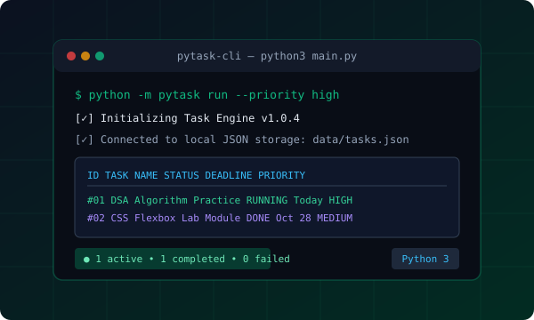

// Python Automation & Workflow
PyTask CLI
A lightweight terminal productivity and task scheduling utility built with Python 3. Features JSON persistence, priority queues, deadline tracking, and clean colored CLI output.
Problem Solved:
Eliminates bloated GUI task apps by letting students track study tasks, deadlines, and priorities directly inside their terminal workspace.
Python 3
JSON Storage
Argparse
Terminal UI